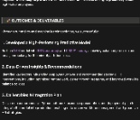

Employee Attrition Analysis and Prediction
Title
Employee Attrition Analysis and Prediction
Description
This project focuses on understanding employee attrition through exploratory analysis and predictive modeling. The goal is to identify the characteristics most associated with employees leaving the company and to compare multiple machine-learning approaches for predicting attrition.
The analysis combines data exploration, preprocessing, feature engineering, model training, hyperparameter tuning, model evaluation, and feature-importance analysis to translate the dataset into practical HR insights.
Employee turnover can create significant recruiting, training, and operational costs. This project evaluates workforce data to uncover patterns related to attrition and develops classification models that can help identify employees with a higher likelihood of leaving.
1. Exploratory Data Analysis (EDA)
- Reviewed feature distributions and target-class balance.
- Explored relationships between attrition and employee demographics, job characteristics, compensation, satisfaction, and tenure.
- Used visualizations to identify potentially important patterns and candidate predictors.
2. Data Pre-processing
- Handled categorical variables and transformed features into model-ready form.
- Separated predictors and target labels and prepared training/validation datasets.
- Applied preprocessing consistently across candidate models.
3. Model Selection and Training
Multiple classification approaches were evaluated to compare predictive performance and model behavior.
- Decision Tree
- Logistic Regression
- Support Vector Machine (SVM)
- Neural Network
- Naive Bayes
- Random Forest
- Ensemble Models
- Gradient Boosting
- XGBoost
- k-Nearest Neighbors (k-NN)
4. Hyperparameter Tuning
- Compared baseline model performance with tuned configurations.
- Adjusted model parameters to improve predictive performance while avoiding unnecessary complexity.
5. Model Evaluation
- Compared candidate models using classification performance metrics.
- Reviewed confusion-matrix behavior to understand false-positive and false-negative tradeoffs.
- Selected the strongest model based on overall validation performance.
6. Feature Importance Analysis
- Examined the variables most influential in predicting attrition.
- Translated model outputs into business-facing insights for retention strategy.
Attrition was not evenly distributed across employee groups, indicating meaningful workforce segments with higher risk.
Role, career progression, tenure, and work-related conditions emerged as useful dimensions for understanding attrition behavior.
Testing multiple algorithms made it possible to compare interpretability, predictive strength, and generalization.
The final analysis highlighted the variables with the greatest influence on model predictions.
Prediction results can support targeted retention initiatives instead of applying the same strategy to every employee.
The project connects machine-learning outputs to practical workforce planning and employee-retention decisions.
- Completed end-to-end employee attrition analysis from EDA through model evaluation.
- Compared a broad set of classification algorithms.
- Identified important variables associated with employee attrition.
- Produced a presentation summarizing the analytical process, findings, and recommendations.
Presentation
